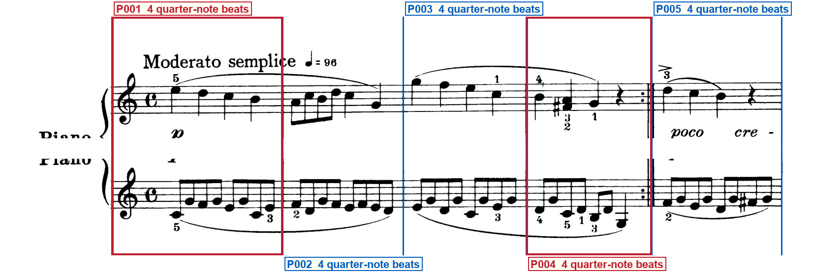
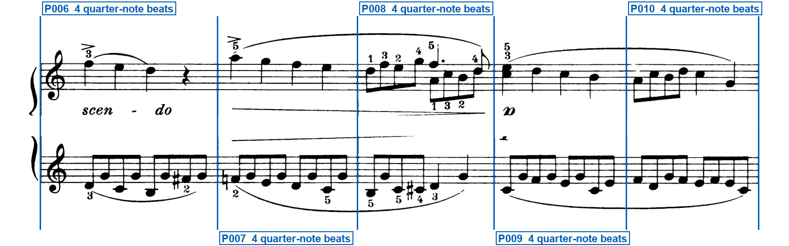
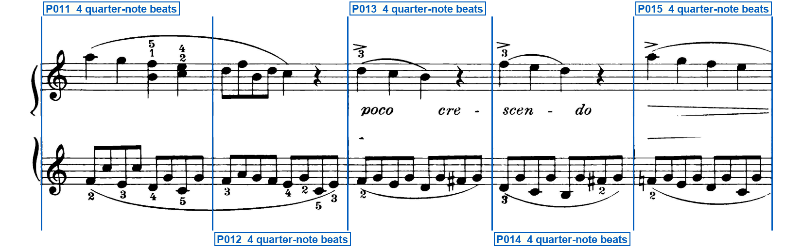
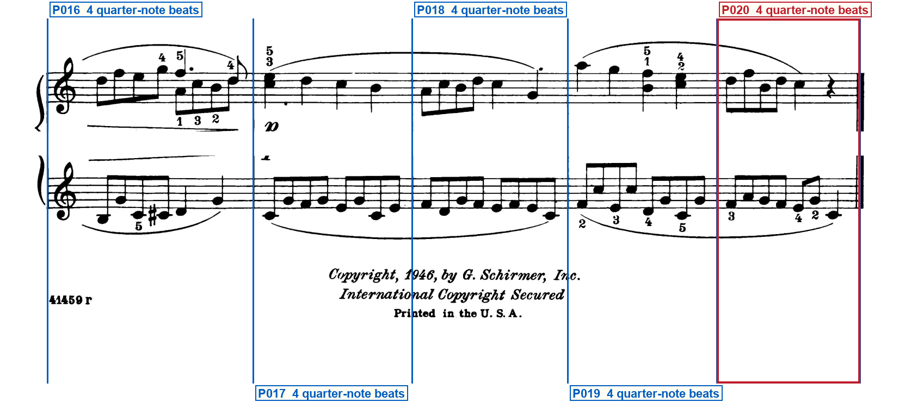

Printed-frame check
schumann_op68_01_melody
Blue regions are silent: verify that they are ordinary bars. Red regions have one compact label directly below their system. Blue vertical lines must sit on printed barlines. Labels must remain outside the music.
System 1 — 5 printed regions

- P001 — OPENING SIGNATURE — Both staves left of first note: treble clef and C
- P004 — REPEAT END — At the right barline: repeat dots then thin then thick stroke
System 2 — 5 printed regions

System 3 — 5 printed regions

System 4 — 5 printed regions

- P020 — FINAL BARLINE — At the right barline: thin then thick final barline
Full clef inventory
One page, four grand-staff systems of five complete common-time bars each, twenty printed regions in all. Both staves open with a G clef on the second line and a common-time C; there is no key signature and no later clef, meter, or key change. A backward repeat (dots, thin stroke, thick stroke counted as one close) ends the fourth bar; the last bar ends with a thin-then-thick final barline and no repeat dots. No pickup, partial, volta, or route mark is printed.
Opening clefs
- Staff 1: G clef on the second line (treble) — Upper staff of system 1, just after the left barline and left of the common-time C.
- Staff 2: G clef on the second line (treble) — Lower staff of system 1, just after the left barline and left of the common-time C. This is a treble G clef, not a bass clef.
Printed clef changes (0)
- No later clef changes are printed.
Verifier notes and special checks
The printed page matches the proposed lock: twenty complete common-time bars in four systems of five, both hands in treble, opening common-time C and no key signature, a backward repeat after the fourth bar, and a thin-then-thick final barline on the last bar. System-start treble reprints are not clef changes. Crop edges keep both staves, first and last barlines, and marks inside the pixels.
- Print check:
- Print check:
- Print check:
- Print check:
Your verification checks
- Do all staves, notes, rests, slurs and other musical marks fit completely inside the page?Expected: Yes
- Do the blue lines match every printed barline, giving 20 printed regions?Expected: Yes
- Do the compact red labels state every visible repeat, ending, route mark, special barline, partial, meter/key change and clef change—and are all unlabeled blue regions truly normal?Expected: Yes
- Are all region labels outside the printed system, with no ending, repeat, clef, note or mark hidden?Expected: Yes
- Does the clef list state each opening clef and every visible clef change?Expected: Yes
Approve only after every answer is Yes. Tell the Orchestrator: Frame approved or Frame rejected with the system number.